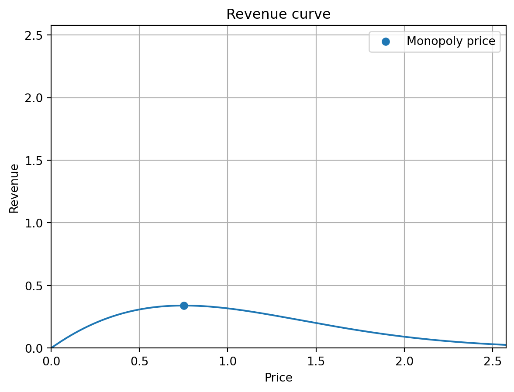

import numpy as np
import scipy.optimize as optimize
import matplotlib.pyplot as pltExercises Lecture 6 (Chapter 8)
Make sure to import Numpy, SciPy and Matplotlib to be able to complete all the exercises.
Question 1
In this exercise we will construct the Box-Muller transform that allows the generation of random samples of the normal distribution using samples from the uniform distribution.
If U_0 and U_1 are uniform random variables on [0,1], then Z_0 = \sqrt{-2\cdot\ln(U_0)}\cos(2\pi U_1) and Z_1 = \sqrt{-2\cdot\ln(U_0)}\sin(2\pi U_1) are random variables that follow a normal distribution.
Write a function
unif_to_normthat takes as input parameters m and n and returns two m \times n two-dimensional arrays z_0 and z_1, where everyz_0[i,j]is a sample according to the formula Z_0 and everyz_1[i,j]a sample according to the formula of Z_1.
That is, you should generate samples from the uniform distribution and transform them to samples from the normal distribution using the formulas above.See if your function works for m = 10 and n = 100 and do a sanity check by computing the mean (should be close to zero) and standard deviation (should be close to 1) of all elements in
z0andz1.
m, n = 10, 100
z0, z1 = unif_to_norm(m,n)Mean of elements in z0 is: -0.050313679741913885
Standard deviation of elements in z0 is: 1.029247016960882
Mean of elements in z1 is: -0.027201045159231253
Standard deviation of elements in z1 is: 0.9887266653281195Question 2
In this exercise, we will write a function that mimics np.random.choice() with a specified distribution x in the keyword argument p.
- Write a function
index_sample(x)that, for given nonnegative input vector x = [x_0,\dots,x_{n-1}] with \sum_i x_i = 1, returns an index i \in \{0,\dots,n-1\} with probability x_i. As a source of randomness, you are only allowed to use thenp.random.rand()function. Do not use for-loops.
Hint: Identify every index with a subinterval of [0,1], and recall thatnp.argmax()applied to a Boolean vector returns the location of the firstTrueelement.
# Fix randomness
np.random.seed(3)
# Probabilities
x = np.array([1/4,1/10,1/10,1/20,1/4,1/4])
# Randomly generated index according to x
index = index_sample(x)
print(index)4- Vectorize your function to
index_samples(x,k)so that it can return k sampled indices according to the probabilities in x. Do not use for-loops.
# Fix randomness
np.random.seed(3)
# Probabilities
x = np.array([1/4,1/10,1/10,1/20,1/4,1/4])
k = 10
index = index_samples(x,k)
print(index)[4 4 1 4 5 5 0 0 0 2]Question 3
The probability density function (pdf) of the exponential distribution \text{Exp}(\beta) with scale parameter \beta > 0 is given by \begin{align} f_{\beta}(x) = \left\{ \begin{array}{ll} \frac{1}{\beta} e^{-\frac{1}{\beta} x} & x > 0\\ 0 & x \leq 0 \end{array}\right.. \end{align}
First, let X_i \sim \text{Exp}(\beta_i) for i = 1,\dots,n and let X_{\min} = \min_i X_i.
In this question we will numerically verify the property that the minimum of exponentially random variables is again a random variable with an exponential distribution.
- Write a function
min_samples()that takes as input an array \beta = [\beta_0,\dots,\beta_{n-1}] and a number T. For every \beta_i it should generate samples x_i^t from X_i for t = 1,\dots,T. The function should output an array of length T with the minima \min_{i=0,\dots,n-1} x_i^t for t = 1,\dots,T. Do not use for-loops.
Hint: Both thescaleandsizeparameters ofnp.random.exponentialallow arrays as input; see the documentation.
np.random.seed(3)
beta = np.array([5,2,3])
T = 10
min_data = min_samples(beta,T)
print(min_data)[1.03129621 3.57520153 0.15851674 0.0606632 0.65281055 0.04854826
1.00023611 0.51189432 1.09742183 0.98195207]- Write a function
exp_fit()that takes as input an array of numbers, and fits an exponential distribution (of the form above) to these numbers. Do this by using thefit()method for an exponential distribution object instats, which you can read about in the documentation.
The output of your function should be the scale parameter of the fitted exponential distribution, where the exponential distribution is as introduced in the beginning of this question. Make sure you lock the location parameter to be 0.
np.random.seed(3)
beta = np.array([5,2,3])
T = 10000000
min_data = min_samples(beta,T)
scale = exp_fit(min_data)
print(scale)0.9680113499245512- Compute the number
\displaystyle \frac{1}{\displaystyle \sum_{i} \frac{1}{\beta_i}}
and observe that it is almost the same as the parameter
scalein the test output of part b).
This means the fitted distribution has a scale parameter \beta_{\min} satisfying \frac{1}{\beta_{\min}} = \sum_{i=1}^n \frac{1}{\beta_i}.
Question 4
Suppose you want to sell a laptop to a potential buyer. The valuation the buyer has for the laptop is a nonnegative continuous random variable X with distribution \mathbb{P}. The seller sets a price p for the laptop; the buyer will buy the laptop if the realization of X exceeds the price p.
The revenue of the seller is given by p \cdot \mathbb{P}(X \geq p) if the seller sets price p. The optimal price maximizing the revenue is the so-called p^* given by \begin{align} p^* = \text{argmax}_p \, p \cdot \mathbb{P}(X \geq p). \end{align} The monopoly price p^* can be found (under some assumptions we do not worry about here) by solving the equation \begin{align} \frac{(1 - F(p))}{f(p)} = p \end{align} where F(p) is the cumulative distribution function (cdf) of X, and f(p) the probability density function (pdf) of X.
- Write a function
monopoly_pricethat takes as input a continuous distribution (stats.rv_continousobject) and a number \alpha \in (0,1). It should return the monopoly price by solving the equation (3) above. Use thebrentqmethod for root finding in your solution with as left-bracket 0, and right-bracket the point \bar{p} for which F^{-1}(\bar{p}) = \alpha.
# Generate instance of halfnormal distribution
distribution = scipy.stats.halfnorm()
# Set alpha value
alpha = 0.99
# Compute monopoly price
mp = monopoly_price(distribution,alpha)
print(mp)0.7517915246935724- Write a function
revenue_plotthat takes as input a continuous distribution (stats.rv_continousobject) and a number \alpha \in (0,1). It should return a plot of the revenue function g(p) = p \cdot \mathbb{P}(X \geq p) on the interval [0,\bar{p}] with \bar{p} such that F^{-1}(\bar{p}) = \alpha. Obtain the monopoly price found using the functionmonopoly_priceand add it to your figure with a dot.
distribution = scipy.stats.halfnorm()
alpha = 0.99
revenue_plot(distribution,alpha)
Question 5
In this exercise, we will look the problem of sparse vector approximation.1 You should not use for-loops to answer the questions posed here.
We consider the following setting: We are given an m \times n matrix A \in [0,1]^{m \times n}, a non-negative vector x = [x_0,\dots,x_{n-1}] \in [0,1]^n with \sum_i x_i = 1, and a non-negative vector y = [y_0,\dots,y_{m-1}] \in [0,1]^m with \sum_j y_j = 1.
We can interpret x and y as discrete probability distributions over the column indices \{0,\dots,n-1\} and row indices \{0,\dots,m-1\} of the matrix A, respectively. That is, we have a random variable X that samples column i with prob. x_i for i = 0,\dots,n-1, and a random variable Y that samples row j with prob. y_j for j = 0,\dots,m-1.
The idea of sparse vector appoximation is to sample a number of column indices c_0,\dots,c_{K-1} \in \{0,1,\dots,n-1\}, i.e., K samples of the random variable X, and row indices r_0,\dots,r_{L-1} \in \{0,1\dots,m-1\}, i.e., L samples of the random variable Y. Note that the c_i do not have to be distinct. The same holds for the r_j. We then consider for k = 0,\dots,K-1 and \ell = 0,\dots,L-1 the absolute difference \begin{equation} |yAx - y^{(\ell)}Ax^{(k)}| \end{equation} where x^{(k)} = \frac{1}{k+1}\sum_{i=0}^{k-1} e^{c_i} \ \ \text{ and } \ \ y^{(\ell)} = \frac{1}{\ell+1}\sum_{i=0}^{\ell-1} (f^{r_i})^T with e^j \in \{0,1\}^n the unit column vector given by e^{j}_i = \left\{ \begin{array}{ll} 1 & \text{ if } i = j\\ 0 & \text{ if } i \neq j \end{array}\right. for j = 0,\dots,n-1, and similarly (f^{r_i})^T \in \{0,1\}^m the row vector with a 1 in position j and zeros elsewhere.
Sparse vector approximation now means that the expression above for k = K-1 and \ell = L-1 converges to zero as K and L grow large, and this happens already for relatively small values (compared to m and n). Informally speaking, y^{(L)}Ax^{(K)} serves as a good approximation to yAx. We will verify this numerically.
- Write a function
partial_sumsthat for a number n and vector of column indices c = [c_0,\dots,c_{K-1}] \in \{0,\dots,n-1\}, returns a two-dimensional array whose rows are x^{(0)},\dots,x^{(K-1)}. Do not use for-loops.
c = [2, 2, 1, 3, 4, 5, 4, 6]
n = 7
x = partial_sums(c,n)
x = np.around(x, decimals=2) # Round to two decimals
print(x)[[0. 0. 1. 0. 0. 0. 0. ]
[0. 0. 1. 0. 0. 0. 0. ]
[0. 0.33 0.67 0. 0. 0. 0. ]
[0. 0.25 0.5 0.25 0. 0. 0. ]
[0. 0.2 0.4 0.2 0.2 0. 0. ]
[0. 0.17 0.33 0.17 0.17 0.17 0. ]
[0. 0.14 0.29 0.14 0.29 0.14 0. ]
[0. 0.12 0.25 0.12 0.25 0.12 0.12]]Write a function
differencesthat takes as input vectors x and y, vectors y^{(\ell)} \in \mathbb{R}^n for \ell = 0,1\dots,L-1 and x^{(k)} \in \mathbb{R}^n for k = 0,\dots,K-1, and an n \times n matrix A, and returns the K \times L matrix D = (d_{ij}) whose entries are d_{ij} = |yAx - y^{(\ell)}Ax^{(k)}| Think about an appropriate way to input the vectors yourself. Do not use for-loops in your function.Take n = 100 and x = y = \frac{1}{n} (1,1,\dots,1). Generate resp. K = 10 samples of x, corresponding to c_0,\dots,c_{9}, and L = 12 samples of y, corresponding to r_0,\dots,r_{11}. Take A a randomly generated n \times n matrix with entries in \{1,2,3,\dots,50\} and apply your function from the previous question to it.
D = differences(x,y,X,Y,A)
D = np.around(D,decimals=1)
print("D = \n", D)D =
[[ 8.5 4. 9.2 6. 6.5 5.2 5. 3.3 1.2 1.8]
[ 6.5 3.7 0.8 0.2 2.4 3.1 2.3 3. 2.1 3. ]
[12.5 9.6 7.3 6.1 3.7 1.2 0.6 1. 1. 1.2]
[ 3.2 4.1 2.1 1.1 0.6 1.8 2.7 3.5 2.6 2.2]
[ 7.1 6.8 5.1 4.3 2.4 0.4 0.8 2. 1.4 1.4]
[ 4.6 4.6 4.9 4.4 2.9 1.7 0.7 0.1 0.4 0.1]
[ 1.9 4. 3.2 3. 2.2 1.5 0.2 0.2 0.1 0.7]
[ 1. 4.2 3.4 3.8 2.7 1.5 0.1 0.5 0.5 1.3]
[ 2.3 4.8 3.5 4.1 3.2 2. 0.2 0.3 0.1 1. ]
[ 0.1 3.3 3.2 3.3 3. 2.1 0.3 0.3 0.1 0.8]
[ 1.6 2.1 2.6 2.9 2.5 1.8 0. 0.4 0. 0.7]
[ 3.5 1.7 1.6 1.8 2. 1.1 0.7 1. 0.3 1. ]]Footnotes
This problem has many applications, for example, in learning theory and in the computation of Nash equilibria in game theory.↩︎